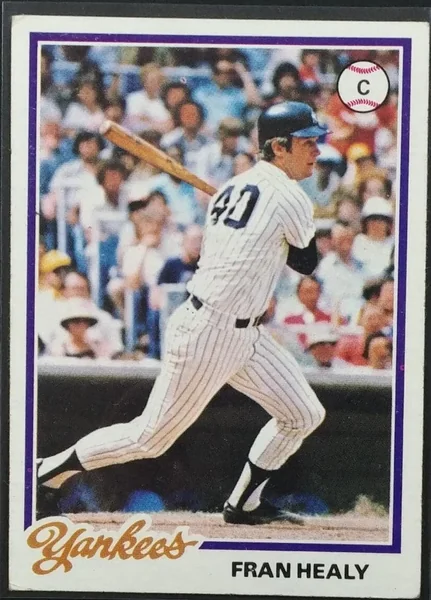

Fran Healy
Career Highlights & Facts
(Facts are AI-generated and may require verification)
- Served as the primary backup catcher for the 1977 World Series champion New York Yankees.
- Caught the final out of the 1976 American League Championship Series to clinch a pennant.
- Transitioned into a long-term career as a television broadcaster for the New York Mets after retiring from play.
Would you like to find out more about Fran Healy?
Career Totals
| WAR | AB | H | HR | BA | R | RBI | SB | OBP | SLG | OPS | OPS+ |
|---|---|---|---|---|---|---|---|---|---|---|---|
| 6.5 | 1326 | 332 | 20 | .250 | 145 | 141 | 30 | .329 | .350 | .679 | 91 |
Statistics via Baseball-Reference.com
The Original Clue